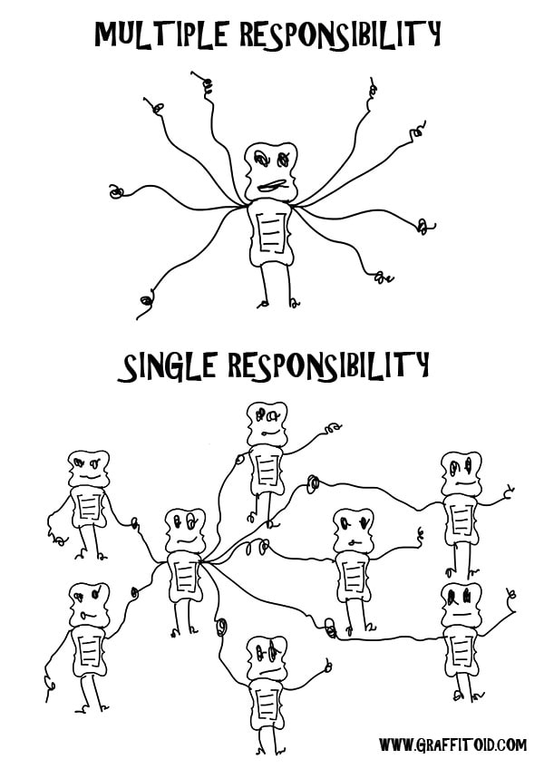

Divergent change terjadi ketika sebuah class atau metode mengalami perubahan di berbagai area yang tidak berhubungan. Dimana ada satu perubahan di dalam class tersebut mempengaruhi beberapa bagian yang tidak seharusnya berhubungan langsung dengan perubahan tersebut. Kasus ini menyebabkan code menjadi sulit dimengerti, sulit dipelihara, dan rentan terhadap bug.
Pelanggaran prinsip single responsibility, desain yang tidak Konsisten, dan ketergantungan berlebihan merupakan beberapa faktor yang menyebabkan terjadinya divergent change. Pelanggaran prinsip single responsibility terjadi ketika sebuah class bertanggung jawab atas banyak tugas yang seharusnya tugas-tugas itu terpisah, bila terjadi perubahan pada salah satu tanggung jawab, maka dapat memengaruhi bagian lain dari class yang tidak berhubungan.
Desain software yang tidak konsisten membuat class-class yang saling terkait dengan cara yang tidak jelas. Ini bisa mengakibatkan perubahan dalam satu class memengaruhi class-class lain yang tidak seharusnya terpengaruh. Ketergantungan yang berlebihan antara class dalam sistem, bila ada perubahan pada satu class maka harus ada perubahan pada class-class lainnya.
Pada contoh code berikut ada class 'Employee' yang memiliki atribut 'name', 'department', dan 'salary'. Class ini juga memiliki metode yang mengatur atribut di class 'Employee' dan 'printDetails()'
public class Employee {
private String name;
private String department;
private int salary;
public Employee(String name, String department, int salary) {
this.name = name;
this.department = department;
this.salary = salary;
}
public void setDepartment(String department) {
this.department = department;
}
public void setSalary(int salary) {
this.salary = salary;
}
public void printDetails() {
System.out.println("Name: " + name);
System.out.println("Department: " + department);
System.out.println("Salary: " + salary);
}
}
Lalu, ada permintaan untuk menambahkan metode yang akan menghitung bonus tiap employee.
public class Employee {
// sama seperti di atas...
public void calculateBonus() {
if (salary > 50000) {
salary += 1000;
}
}
}
Dengan masuknya metode 'calculateBonus()' menyebabkan terjadinya divergent change, karena metode 'calculateBonus()', hanya terlibat dengan 'salary' namun tidak terlibat dengan 'department. Hal ini dapat menyebabkan bug pada code kita. Dengan begitu solusi yang kami sarankan yaitu dengan memberikan class baru untuk menghitung bonus.
public class Employee {
// sama seperti diatas...
public void calculateBonus() {
Bonus bonus = new Bonus();
bonus.calculate(this);
}
}
public class Bonus {
public void calculate(Employee employee) {
if (employee.getSalary() > 50000) {
employee.setSalary(employee.getSalary() + 1000);
}
}
}